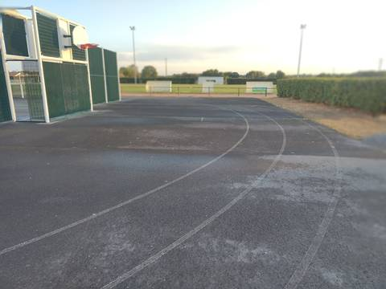
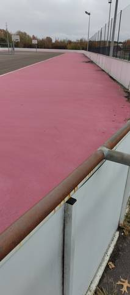

Les contributeurs
Les données du ministère disent qu'un stade existe. Elles ne disent pas si le sautoir tient encore debout. Tout ce qui suit vient de gens qui sont allés voir.
Classement
- 1Ronan Chardonneau
- 2Ronan C.
Toutes les contributions
 Complexe SportifLa Limouzinière, Loire-Atlantique
Complexe SportifLa Limouzinière, Loire-Atlantique Espace Yannick NoahSaint-Colomban, Loire-Atlantique
Espace Yannick NoahSaint-Colomban, Loire-Atlantique Plaine de Jeux de la GeraudiereNantes, Loire-Atlantique
Plaine de Jeux de la GeraudiereNantes, Loire-Atlantique Complexe sportif Jean LéveilléChallans, Vendée
Complexe sportif Jean LéveilléChallans, Vendée Complexe sportif de la CailletièreChallans, Vendée
Complexe sportif de la CailletièreChallans, Vendée Complexe Vertou CentreVertou, Loire-Atlantique
Complexe Vertou CentreVertou, Loire-Atlantique Complexe Sportif de la Croix JeannetteBouguenais, Loire-Atlantique
Complexe Sportif de la Croix JeannetteBouguenais, Loire-Atlantique
Complexe Sportif Hugues MartinLa Chevrolière, Loire-Atlantique Stade MunicipalLa Chevrolière, Loire-Atlantique
Stade MunicipalLa Chevrolière, Loire-Atlantique Stade Municipal des ChataigniersSaint-Hilaire-de-Chaléons, Loire-Atlantique
Stade Municipal des ChataigniersSaint-Hilaire-de-Chaléons, Loire-Atlantique Complexe Sportif GauvritSainte-Pazanne, Loire-Atlantique
Complexe Sportif GauvritSainte-Pazanne, Loire-Atlantique Complexe Sportif du Parc du Grand FaySaint-Père-en-Retz, Loire-Atlantique
Complexe Sportif du Parc du Grand FaySaint-Père-en-Retz, Loire-Atlantique Complexe sportif Mickaël Landreau (Arthon-en-Retz)Chaumes-en-Retz, Loire-Atlantique
Complexe sportif Mickaël Landreau (Arthon-en-Retz)Chaumes-en-Retz, Loire-Atlantique Piste de La ChevrolièreLa Chevrolière, Loire-Atlantique
Piste de La ChevrolièreLa Chevrolière, Loire-Atlantique Piste du Domaine du Collet (Les Moutiers-en-Retz)Les Moutiers-en-Retz, Loire-Atlantique
Piste du Domaine du Collet (Les Moutiers-en-Retz)Les Moutiers-en-Retz, Loire-Atlantique Complexe sportif Joséphine Baker (Le Clion-sur-Mer)Pornic, Loire-Atlantique
Complexe sportif Joséphine Baker (Le Clion-sur-Mer)Pornic, Loire-Atlantique Complexe sportif des GrenaisSaint-Philbert-de-Grand-Lieu, Loire-Atlantique
Complexe sportif des GrenaisSaint-Philbert-de-Grand-Lieu, Loire-Atlantique Complexe Sportif de BellestreBouaye, Loire-Atlantique
Complexe Sportif de BellestreBouaye, Loire-Atlantique Stade Patrick PerraisBouaye, Loire-Atlantique
Stade Patrick PerraisBouaye, Loire-Atlantique
Complexe Sportif de la NeustrieBouguenais, Loire-Atlantique Stade Jean VincentSaint-Brevin-les-Pins, Loire-Atlantique
Stade Jean VincentSaint-Brevin-les-Pins, Loire-Atlantique Stade Muriel Hurtis — Complexe des ChevretsSaint-Philbert-de-Grand-Lieu, Loire-Atlantique
Stade Muriel Hurtis — Complexe des ChevretsSaint-Philbert-de-Grand-Lieu, Loire-Atlantique Stade Rene MasseSaint-Sébastien-sur-Loire, Loire-Atlantique
Stade Rene MasseSaint-Sébastien-sur-Loire, Loire-Atlantique Terrain des LoisirsLes Moutiers-en-Retz, Loire-Atlantique
Terrain des LoisirsLes Moutiers-en-Retz, Loire-Atlantique Complexe de la ViauderieSaint-Michel-Chef-Chef, Loire-Atlantique
Complexe de la ViauderieSaint-Michel-Chef-Chef, Loire-Atlantique Centre Sportif du Val Saint MartinPornic, Loire-Atlantique
Centre Sportif du Val Saint MartinPornic, Loire-Atlantique
Vous vous entraînez quelque part ?
Une photo du sautoir, une note sur l'état de la piste, un horaire : c'est ce que les données publiques n'auront jamais.
Comment contribuer